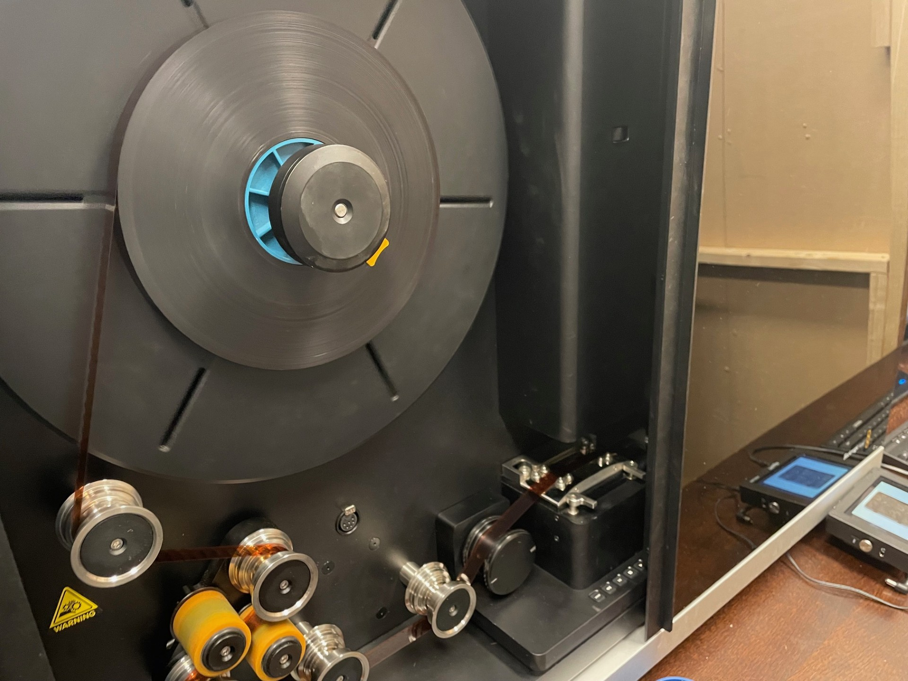
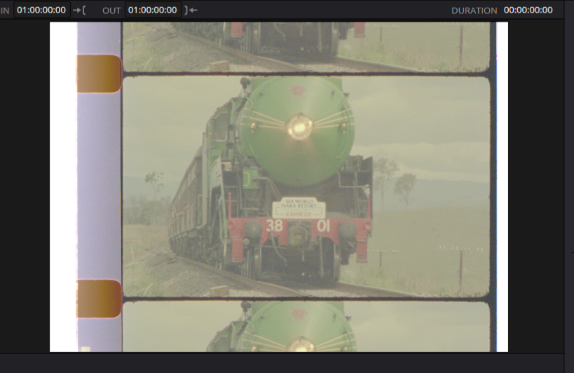
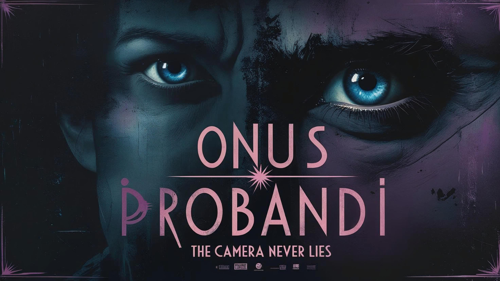
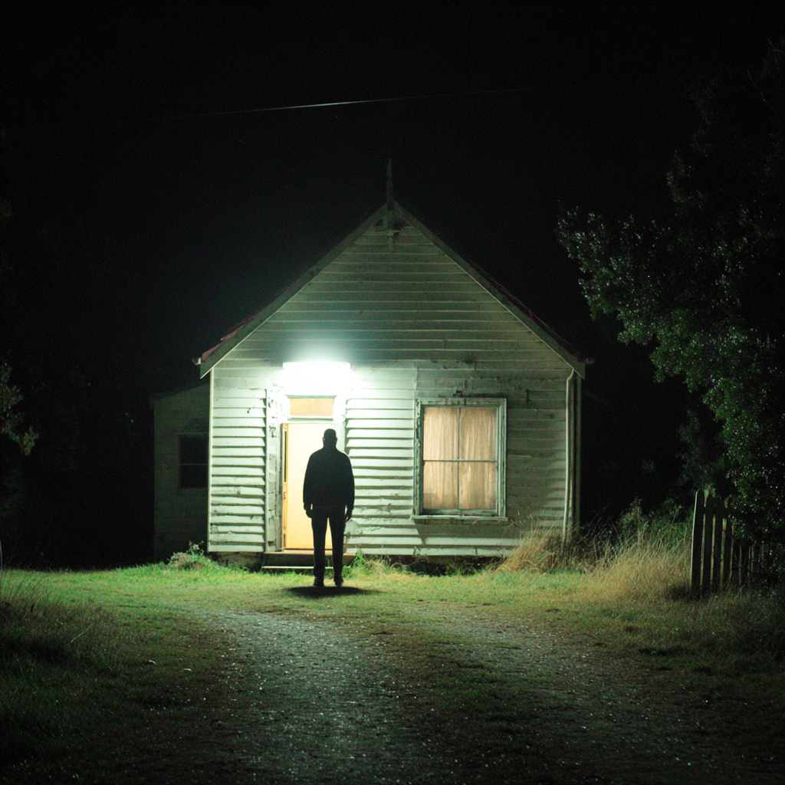
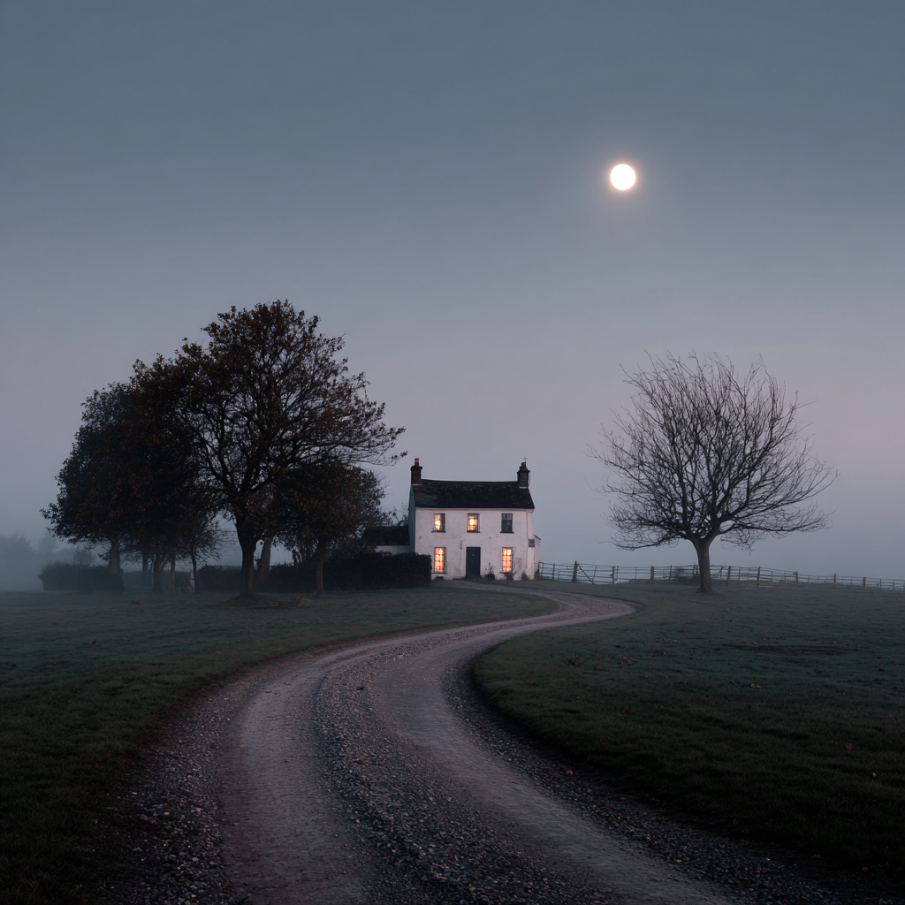
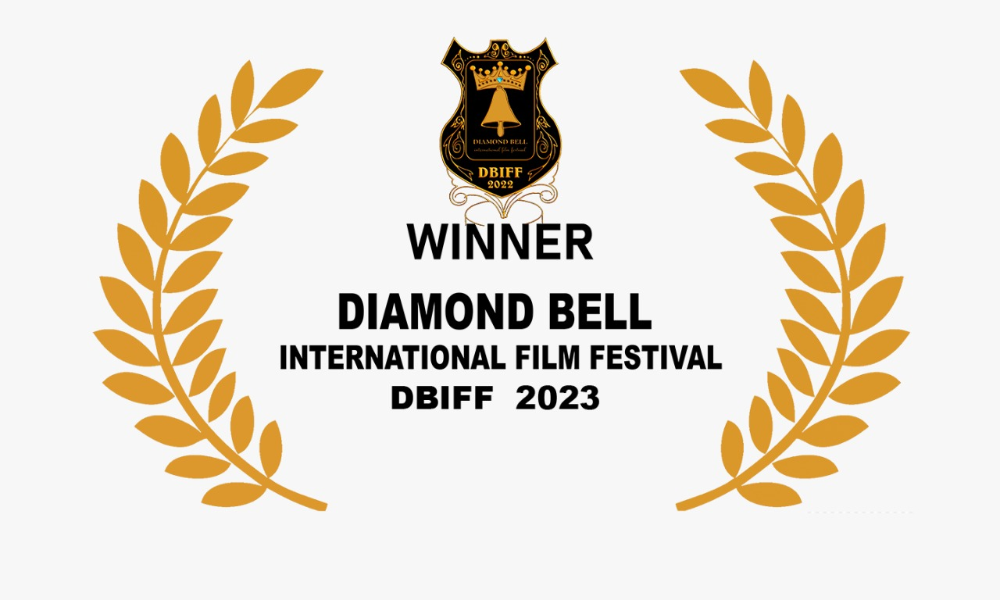
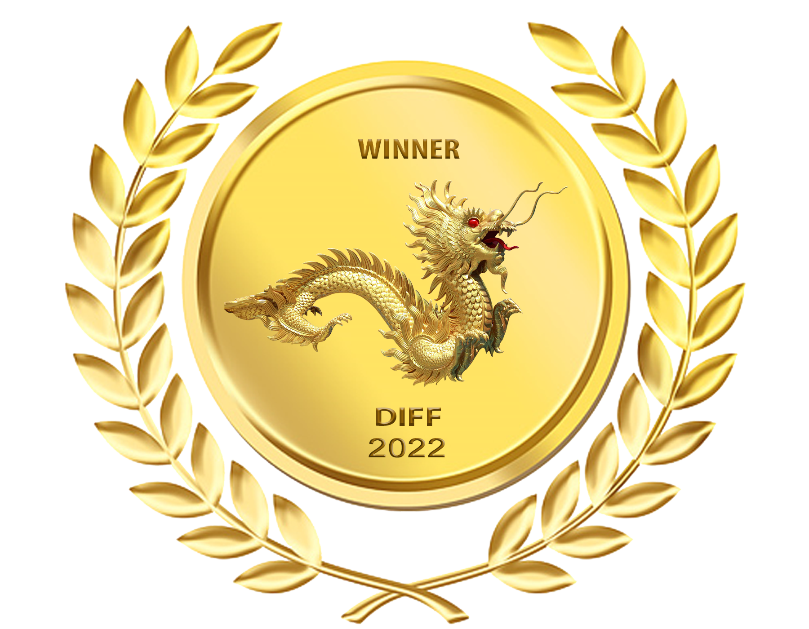
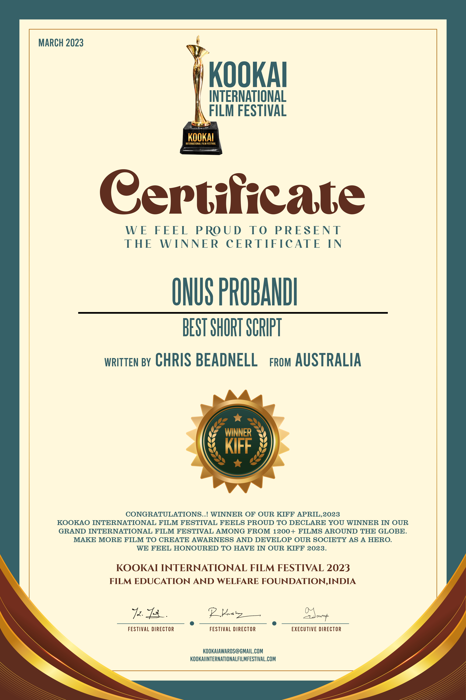
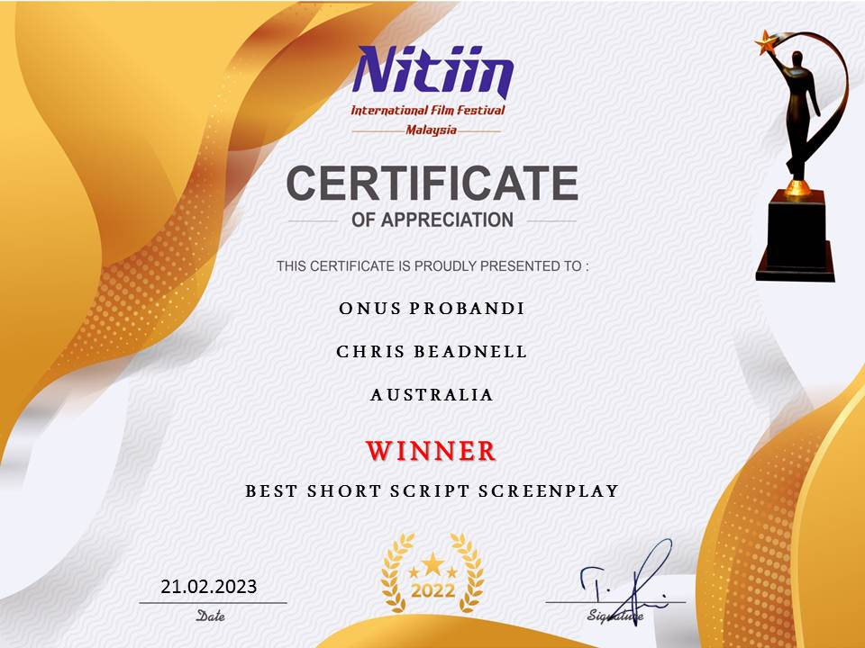
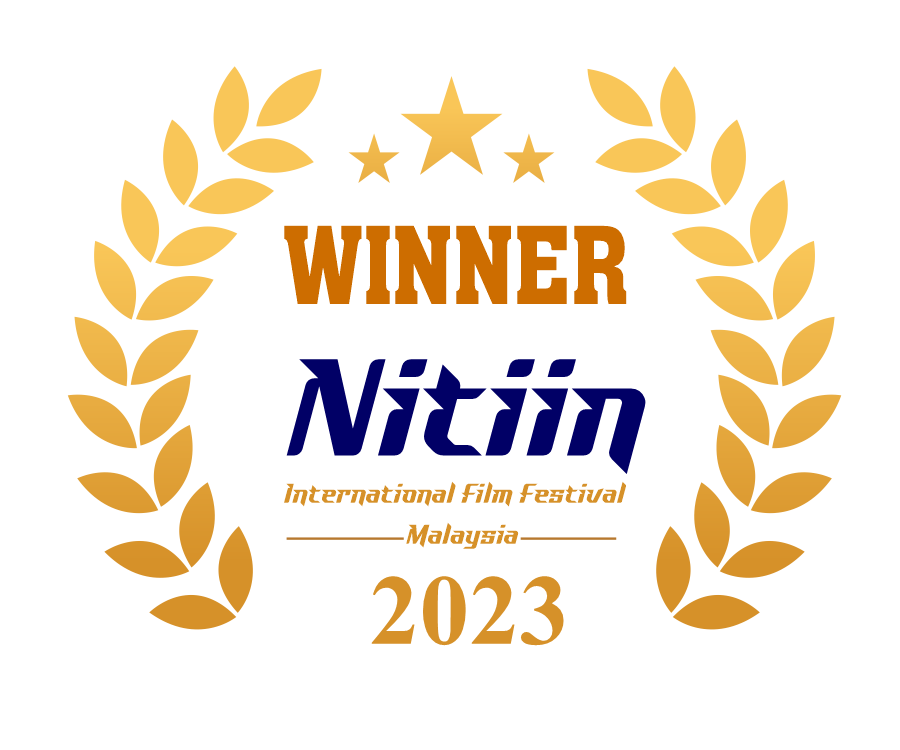

Lets Not Google Meet

Webstreamedia has commenced development on a new feature documentary, Let’s Not Google Meet, examining platform transparency, customer escalation pathways and the evolving relationship between automated systems and small business visibility.
Originating from a documented case study and expanding into expert analysis, the project explores how digital infrastructure increasingly shapes commercial outcomes.
Through interviews, governance research and structured investigation, the film seeks to understand where accountability sits when algorithmic systems replace direct human interaction.
The documentary will position itself within the broader global conversation on digital due process and platform responsibility, with festival submissions targeted for 2027.
Development is currently underway, with stakeholder invitations issued and research interviews being scheduled.
Blue Hermit



Webstreamedia has commenced a new digital telecine of the original Super 16mm camera negatives to 4K for the documentary project
Blue Hermit, bringing archival material into a modern post-production pipeline. The scan is being undertaken at high
resolution by Roar Digital Melbourne, to preserve the texture, colour response and grain structure of the original film while enabling contemporary
grading and finishing workflows. They utilise the latest Blackmagicdesign Ursa Telecine Chain equipment.
This process allows legacy footage to be integrated seamlessly with newly shot digital material, ensuring visual continuity
across the project’s evolving timeline. New scenes are currently being filmed this month to extend the narrative and deepen
the observational scope of the documentary. Together, the restored archival footage and new photography form a cohesive visual
record that reflects both the project’s history and its present direction.
Onus Probandi



Onus Probandi is a short dramatic film currently in development that explores the fragile boundary between accusation,
evidence, and belief. Set against a restrained, contemporary Australian backdrop, the story follows a single incident as it
ripples outward — exposing how institutions, relationships, and personal identity are shaped by who carries the burden of proof.
The project blends subtle performance, minimalistic visual language, and carefully structured sound design to create a tense but
intimate experience. Rather than focusing on spectacle, Onus Probandi draws its power from silence, implication, and the
emotional cost of uncertainty.
Development is currently focused on script refinement, tone testing, and early visual research, with production planning underway.
The aim is to produce a tightly crafted short that resonates beyond its runtime and invites audiences to question their own
assumptions about truth and responsibility.
Casting Announcments soon
Written by Chris Beadnell and the recipient of multiple international film making awards, Onus Probandi will be made
locally in Queensland with an actual local cast and crew and not budget-friendly blow-ins to get a tax subsidy.




